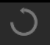
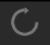
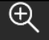

Ovládacie prvky pracovnej plochy
Selekcia komponentov
Komponent na pracovnej plochy môžete selektovať, čím sa vám sprístupnia ovládacie prvky pre daný komponent. Ovládacie prvky v hlavnom panely nástrojov sa sprístupnia tak, že sa zmení ich farba.
Selektovať komponent môžete nasledovne:
- Stlačte ľavým tlačidlom myšky na komponent, ktoý chcete selektnúť. Selektnutý komponent bude vyznačený v závislosti od komponentu:
- Súčiastky budú mať štvorec vykreslený trhanou čiarou okolo nich.
- Čiary zmenia farbu.
- Stlačte a potiahnite ľavé tlačidlo myši cez komponent, ktorý chcete označiť.
Selekcia viacerých komponentov
Označiť viacero komponentov naraz je možné kliknutím ľavého tlačítka myšky a potiahnutie vytvoreného štvorca nad označované komponenty.
Súčiastky je následne možné ovládať ako jeden komponent, vrátane funkcii mazania, otáčania a posúvania po pracovnej ploche.
Súčiastky odznačíte kliknutím na pracovnú plochu.
Pohyb viacerých komponentov naraz
Ak chcete pohnúť s viacerými komponentmi naraz, označte ich potiahnutím ľavého tlačidla myši ponad komponenty a využite jednu z nasledujúcich možností:
- Stlačte ľavé tlačidlo myši ponad hociktorým z označených komponentov a potiahnite na miesto, kam chcete. Všetky označené súčiastky sa budú pohybovať rovnakým smerom.
- Použite klávesové skratky W+S+A+D na pohyb všetkých označených súčiastok.
Rotácia komponentov
Komponenty na pracovnej ploche môžete rotovať dvomi spôsobmi:
- Pomocou klávesov na klávesnici
- Pomocou tlačidiel v hlavnom panely nástrojov
Rotovať je možné aj viac komponentov naraz podľa stredového bodu. Aplikácia sama rozozná, či treba rotovať len súčiastku alebo viac súčiastok.
Rotácia pomocou klávesových skratiek
Rotovať komponent pomocou klávesových skratiek môžete nasledovne:
- Označte komponent, ktorý chcete rotovať
- Stlačte kláves na klávesnici:
- Q pre rotovanie doľava
- E pre rotovanie doprava
Rotácia pomocou tlačidiel hlavného panelu nástrojov
Rotovať komponent pomocou tlačidiel hlavného panelu nástrojov môžete nasledovne:
- Označte komponent alebo viac komponentov, ktoré chcete rotovať
- Stlačte tlačidlo v hlavnom panely nástrojov:
-  pre rotovanie doľava
-  pre rotovanie doprava
Mazanie súčiastok
Keď chcete zmazať súčiastku z pracovnej plochy, postupujte nasledovne:
- Stlačte ľavým tlačidlom myšky na súčiastku, ktorú chcete vymazať z pracovnej plochy.
- Vykonajte jednu zo 4 možností:
- Stlačte klávesu Del na klávesnici
- Stlačte pravým tlačidlom myšky na súčiastku a vyberte možnosť “Zmazať”
- V hlavnom menu Upraviť vyberte možnosť “Zmazať”
- Stlačte ľavým tlačidlom myšky na tlačidlo na mazanie súčiastok v hlavnom panely nástrojov.
Vymazať je možné aj viac súčiastok naraz pomocou označenia viacerých komponentov pomocou potiahnutia ľavého tlačidla myši ponad komponenty.
Pri vymazaní súčiastky sa vymažú aj všetky čiary, ktoré boli napojené na súčiastku.
Duplikovanie súčiastok
Keď chcete duplikovať súčiastku na pracovnej ploche, postupujte nasledovne:
- Stlačte ľavým tlačidlom myšky na súčiastku, ktorú chcete duplikovať na pracovnej ploche.
- Vykonajte jednu z 2 možností:
- Stlačte pravým tlačidlom myšky na súčiastku a vyberte možnosť “Duplikovať”
- V hlavnom menu Upraviť vyberte možnosť “Duplikovať”
Posun pracovnej plochy
Na posunutie pracovnej plochy, postupujte nasledovne:
- Stlačte stredným tlačidlom myšky na ľubovoľné miesto na pracovnej ploche.
- So stlačeným stredným tlačidlom myšky posuňte kurzor v smere kam sa chcete posunúť. Posun funguje akoby ste hýbali kamerou, ktorú máte nad pracovnou plochou.
- Keď budete spokojný s posunom pracovnej plochy, pustite stredný kláves myšky.
Približovanie a vzďaľovanie pracovnej plochy
Priblížiť a vzdialiť komponenty pracovnej plochy môžete dvomi spôsobmi:
- Pomocou myšky - otočte stredné tlačidlo (krúžok) myšky:
- v smere nahor - priblíženie
- v smere nadol - vzdialenie
- Pomocou tlačidiel v hlavnom panely nástrojou:
- Stlačte na  pre priblíženie
- Stlačte na pre vzdialenie.
Undo/redo zmeny vykonanej na ploche
Typy zmien, ktoré môžu byť navrátené sú:
- Vytvorenie súčiastky, alebo skupiny súčiastok
- Vymazanie súčiastky, alebo skupiny súčiastok
- Presunutie súčiastky, alebo skupiny súčiastok
- Rotácia súčiastky, alebo skupiny súčiastok
- Vymazanie čiary
Pre vykonanie undo/redo akcií stlačte nasledovné tlačidlá v hlavnom panely:
- Stlačte na pre redo akciu
- Stlačte na pre undo akciu